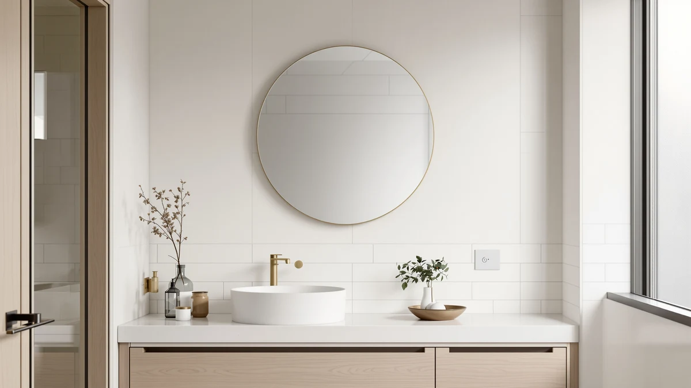

Best How to Clean Bathroom Mirror Stains (2026)
Prices and picks verified as of August 2026. Independent, reader-supported reviews.


Things to Know Before You Buy
- Match the cleaner to the stain. Hard-water spots need an acid like vinegar, while greasy hairspray film lifts faster with a splash of rubbing alcohol.
- Distilled water matters. Tap water leaves its own mineral spots as it dries, which is often why a mirror looks cloudy even after you clean it.
- Never spray liquid straight onto the glass. Overspray runs into the frame and the silver backing, and standing moisture there causes the black edge corrosion called desilvering.
- Microfiber beats paper towel and newspaper. Paper sheds lint and newsprint ink can smear, so a tight-weave microfiber cloth gives you the streak-free finish.
Learning how to clean bathroom mirror stains takes about 20 minutes and costs less than a fast-food lunch, once you know which stain you are fighting. The cloudy film that dulls your reflection usually comes from three sources: hard-water mineral deposits, toothpaste and hairspray splatter, and the soap scum that steam carries onto the glass every time you shower. Each one responds to a slightly different touch, and using the wrong product smears the problem across the whole surface instead of lifting it. You do not need a specialty cleaner or a squeegee to fix this.
The five-step routine below is the one we use to strip stains off a bathroom mirror and leave it streak-free. We lean on distilled white vinegar and microfiber cloths because that pairing dissolves mineral buildup without the waxy residue that commercial glass sprays leave behind. Follow the steps in order and you will clear even years-old water spots in one session. If your mirror keeps drying with streaks no matter what you do, skip ahead to the Common Mistakes section.
What You'll Need
- Supplies: Distilled white vinegar, distilled water, a drop of dish soap, and isopropyl (rubbing) alcohol for stubborn spots
- Tools: Two lint-free microfiber cloths and a spray bottle
Step 1: Dust and dry-wipe the mirror
Start with a completely dry mirror. Run a clean, dry microfiber cloth over the whole surface in long horizontal passes to pick up dust, loose hair, and any grit that settled on the glass. This step feels minor, but skipping it is how most people turn a light haze into visible scratches. Grit trapped under a wet cloth acts like fine sandpaper.
Pay attention to the bottom two inches of the mirror, where toothpaste splatter and dried water drips collect. If you feel a raised, crusty spot, note where it is so you can give it extra dwell time later. Do not scrape it off with your fingernail or a blade yet, because dry mineral crust drags glass with it.
Turn on the bathroom fan or open a window before you go further. Vinegar has a sharp smell in a small, closed room, and good airflow also helps the glass dry evenly at the end. This dry pass is the quiet first step in cleaning bathroom mirror stains without grinding grit into the surface.
Step 2: Mix a vinegar cleaning solution
Fill a clean spray bottle with equal parts distilled white vinegar and distilled water, then add a single drop of dish soap. The vinegar's acetic acid breaks down the calcium and magnesium in hard-water spots, the dish soap cuts through greasy film from hairspray and skin oils, and the distilled water rinses clean instead of leaving new mineral marks. This three-ingredient mix handles the large majority of bathroom mirror stains.
For a mirror that has never had a deep clean, or one coated in hairspray, bump the ratio to two parts vinegar to one part water. If you smell more vinegar than you like, the added dish soap does not weaken the acid, so you can keep the solution mild and simply let it sit longer in the next step.
Shake the bottle gently to blend it without whipping up a head of suds. Label the bottle if you plan to keep it, since a vinegar solution stays effective for months in a cool cupboard and saves you from buying a dedicated glass cleaner.
Step 3: Spray the cloth and let it dwell
Spray the solution onto the microfiber cloth rather than the mirror itself. This keeps liquid from running down into the frame and the vulnerable silver backing, which is the single biggest cause of permanent edge damage on bathroom mirrors. A cloth that is damp but not dripping carries plenty of solution to the glass.
Wipe the whole mirror so a thin, even film covers it, then give the stained areas a second pass so they stay visibly wet. Let that film dwell for two to three minutes. This waiting period does the real work of cleaning bathroom mirror stains, because the acid needs contact time to dissolve mineral deposits that a quick wipe only smears around.
For thick, crusty hard-water spots, lay a vinegar-soaked cloth flat against the area and leave it as a compress for five minutes. The steady contact softens deposits that built up over months, so they release without scrubbing.
Step 4: Wipe clean from top to bottom
Once the solution has had time to work, wipe the loosened grime away with the damp side of your cloth. Work from the top edge down in overlapping horizontal strokes so gravity pulls the dirty liquid toward areas you have not reached yet, never back over glass you just finished. Fold the cloth to a fresh face as each section turns gray.
Use light, steady pressure. Pressing hard does not remove a stubborn spot faster, and it risks pushing trapped grit across the surface. If a stain resists, re-wet it and add dwell time rather than force. That patience is how you clean bathroom mirror stains without scratching the glass.
Check the mirror at an angle against the light before you move on. Streaks and missed film hide when you look at the glass straight on, but they jump out under raking light from the side or from a window.
Step 5: Buff dry and treat stubborn spots
Switch to a second, completely dry microfiber cloth and buff the mirror in tight circles, then finish with straight vertical strokes. Drying the glass while it is still slightly damp gives you the streak-free finish, because you lift the last of the solution before it dries into a haze.
If a few marks survive, they are almost always oily rather than mineral: hairspray overspray, dried water-based makeup, or fingerprints. Put a little isopropyl rubbing alcohol on a corner of the cloth and rub the individual spot, then buff that area dry again. Alcohol flashes off fast and leaves no residue, which makes it the right tool for the last stubborn bathroom mirror stains that vinegar alone leaves behind.
Step back and check the whole mirror one final time under the light. A properly cleaned mirror shows a crisp reflection with no cloudiness at the edges and no streaks across the middle.
Common Mistakes to Avoid
The fastest way to ruin a mirror is to spray cleaner straight onto the glass and walk away. The liquid wicks under the frame, pools against the silver backing, and over months eats dark blotches into the corners that no amount of cleaning will reverse. Always spray the cloth, not the mirror.
Reaching for an ammonia glass cleaner is another common misstep. Ammonia works on windows, but on a bathroom mirror the repeated exposure can attack the backing at any chipped edge, and it flashes off so fast that it streaks before you finish wiping. Vinegar gives you more working time and none of that risk.
Do not use paper towels or newspaper, despite the old advice. Paper towels shed lint that clings to damp glass, and modern soy-based newsprint ink smears rather than polishes. A tight-weave microfiber cloth is the one thing that reliably leaves the surface streak-free.
Skipping the dwell time is why many people decide vinegar does not work on bathroom mirror stains. They spray, wipe at once, and grind the softened minerals into a wider haze. Give the solution its two to three minutes. Finally, resist scraping crusty spots with a razor or your nail, since dried mineral deposits are harder than they look and drag glass fragments as they lift, leaving fine scratches that catch the light forever after.
Our Top Picks
You can clean a mirror on any budget, but the job is easier on a well-made, evenly lit mirror where you can actually see the stains you are chasing. If your current mirror is scratched, corroding at the edges, or so dim that spots hide until you lean in, these three are the ones we recommend for a replacement that stays easy to keep clean.

Editor’s Pick
24"x32" LED Bathroom Mirror with
The built-in LED ring lights the glass evenly, so smudges and water spots show up while you clean instead of after you walk away. At this price for a 24-by-32-inch mirror with an anti-fog pad, it balances size, lighting, and cost well for most bathrooms.
$109.99
Check Price on Amazon
Best Value
InfiniGlass 42"x24" LED Bathroom Mirror
You get a wide 42-inch span and front lighting for about the same price as smaller LED models, which makes it the value pick for a double vanity. The anti-fog function also cuts the steam film that leaves most water stains in the first place.
$115.97
Check Price on Amazon
Premium Choice
USHOWER Brushed Nickel Bathroom Mirrors
The brushed-nickel frame resists the edge corrosion that plagues frameless mirrors in humid bathrooms, so you spend less time fighting black spots at the corners. It costs more, but the sealed frame is what you pay for if your bathroom runs steamy.
$159.99
Check Price on AmazonFrequently Asked Questions
How do you remove hard water stains from a bathroom mirror?
Spray a microfiber cloth with equal parts distilled white vinegar and distilled water, wipe it over the spots, and let the film dwell for three to five minutes so the acid can dissolve the calcium and magnesium deposits. For a thick crust, hold a vinegar-soaked cloth against the area as a compress, then wipe clean and buff dry with a second microfiber cloth.
Can I use vinegar on a bathroom mirror?
Yes. Distilled white vinegar is safe and effective on the glass surface of a bathroom mirror, and its acetic acid is what cuts through hard-water mineral spots. Keep the liquid off the frame and edges, though, because pooled moisture against the silver backing can cause the black corrosion known as desilvering.
Why does my mirror streak after I clean it?
Streaks come from residue drying on the glass, usually leftover cleaner, tap-water minerals, or lint from a paper towel. Use distilled water instead of tap water in your solution, wipe with a lint-free microfiber cloth, and buff the mirror dry while it is still slightly damp so nothing dries into a haze.
What causes black spots on the edges of a bathroom mirror?
Those black or gray spots are desilvering, where moisture has reached the reflective coating on the back of the glass and corroded it. Cleaning cannot reverse it, and it usually starts at edges or chips where water seeps in. Prevent it by keeping liquid off the frame and wiping standing water off the bottom edge after showers.
How often should I clean my bathroom mirror?
For a mirror you use daily, a quick microfiber wipe once a week keeps toothpaste splatter and water spots from building into a hard film. A full vinegar clean every two to four weeks handles the deeper mineral haze, and running the exhaust fan during showers stretches the time between deep cleans.
Verdict
Cleaning bathroom mirror stains comes down to a few habits: match the cleaner to the stain, give the solution time to dwell, then buff the glass dry before it can streak. Distilled white vinegar and distilled water handle the mineral spots behind most bathroom haze. A drop of dish soap tackles greasy film, and a splash of rubbing alcohol finishes off stubborn hairspray and fingerprints. Spray the cloth rather than the mirror, work top to bottom, and check your finish under raking light. The whole routine takes about 20 minutes and costs under $10 in supplies you probably already own. If your mirror is scratched, dim, or corroding at the edges, though, no cleaning routine will bring back a crisp reflection. That is when a replacement like the MYSUNORIA 24-by-32-inch LED mirror earns its keep, since even front lighting shows you every spot as you clean and the anti-fog pad cuts the steam that leaves water stains in the first place. Keep the liquid off the frame and wipe the bottom edge dry after showers, and the same mirror stays clear for years.